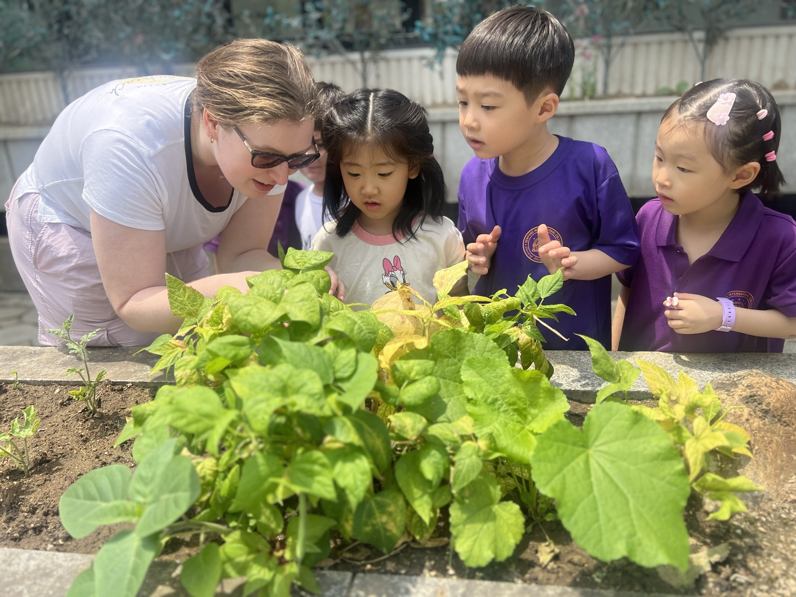
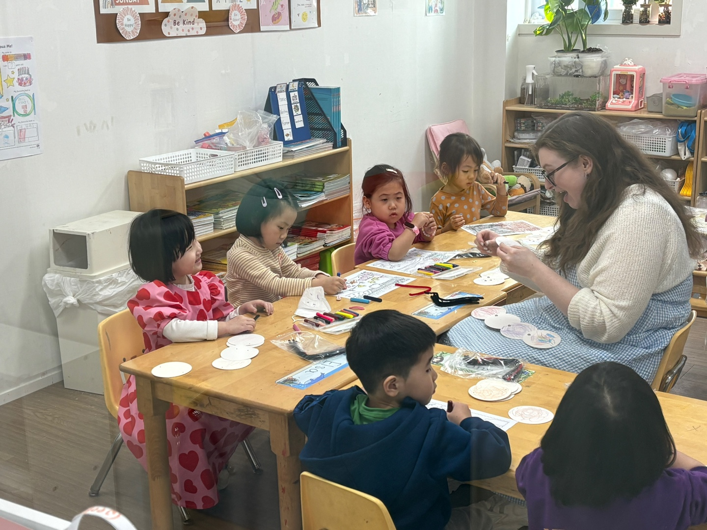
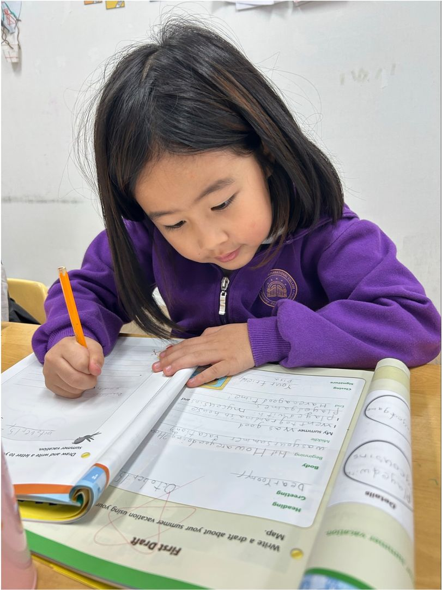

Why DEWFORD
영어로 이해하고,
생각하고,
표현하는 아이
좋은 영어교육은 아이가 배운 언어를 실제로 사용할 수 있도록 지도합니다.
DEWFORD는 읽기와 문해력을 중심으로 질문하고 탐구하며,
생각을 자신의 말과 글로 표현하는 경험을 제공합니다.
DEWFORD는 읽기와 문해력을 중심으로 질문하고 탐구하며,
생각을 자신의 말과 글로 표현하는 경험을 제공합니다.


THE DEWFORD DIFFERENCE
DEWFORD의 다섯 가지 약속
소규모 학급 환경
Small Class Environment
소규모 학급 환경에서 교사와 학생 간의 긴밀한 상호작용을 통해 아이 한 명 한 명의 참여와 학습 과정을 세심하게 살핍니다.
개별 맞춤 학습 프로그램
Individual Learning Program
학생마다 다른 영어 학습의 출발점과 수준을 고려하여 적합한 레벨의 수업을 제공합니다. 개별적인 학습 필요를 파악하고 맞춤형 학습 방향을 설정하여 각 학생의 성장을 체계적으로 지원합니다.
문해력 및 리딩 성장 과정
Literacy & Reading Pathway
체계적인 읽기와 문해력 학습을 통해 어휘력과 독해력을 기르고, 읽은 내용을 이해하고 자신의 생각으로 연결하는 힘을 키웁니다. 단계적인 리딩 학습을 바탕으로 독립적인 읽기 능력을 발전시킵니다.
탐구 및 프로젝트 경험
Inquiry & Project Experience
다양한 주제에 대해 질문하고 탐구하며, 프로젝트 활동을 통해 배운 내용을 실제 경험과 연결합니다. 스스로 생각하고 문제를 해결하며 자신의 생각을 말과 글로 표현하는 능력을 기릅니다.
가정 연계 학습 및 협력
Home Learning & Partnership
학생의 학습 과정과 성장에 대한 정보를 가정과 공유하고, 학부모와 교육기관이 함께 아이의 배움을 지원합니다. 가정과 교육기관의 지속적인 소통을 통해 일관된 학습 환경을 만들어 갑니다.

LEARNING JOURNEY
모든 아이의 출발점은 다릅니다.
아이의 학습 단계에 맞는 안내를 확인해 주세요. 현재의 영어 경험과 관심사를 나누며 프로그램을 상담해 보세요.